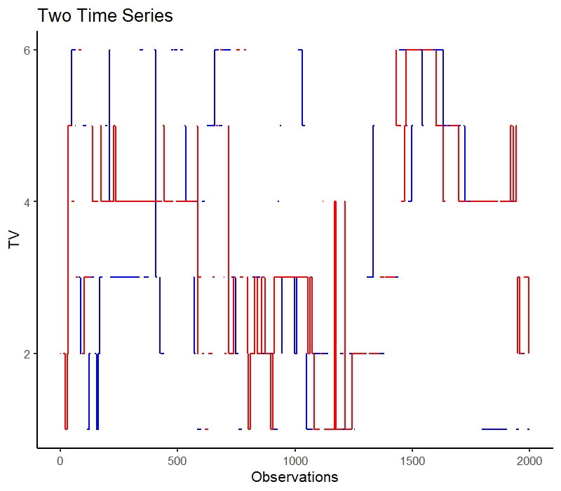
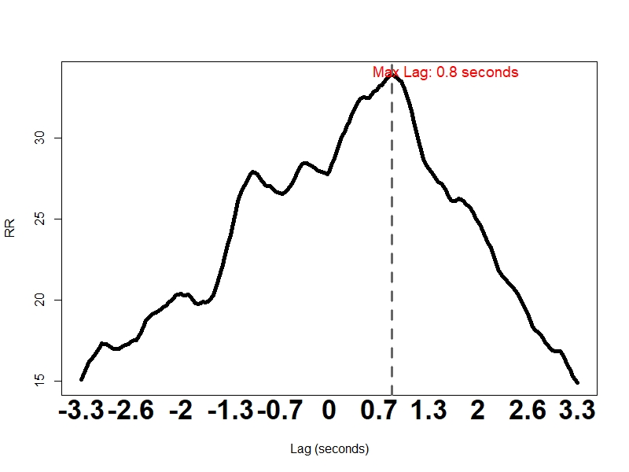
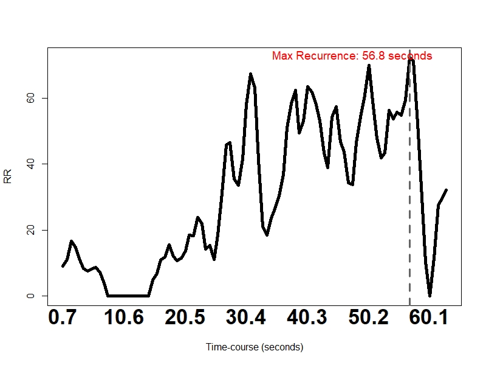
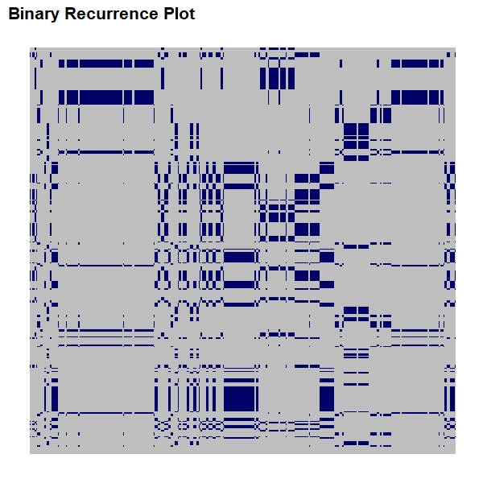

どうも。
この記事は「R advent calender 2018」8日目の記事です。
今日はcrqaとよばれるパッケージの紹介記事を書きます。
crqaとはCross recurrence Quantification Analysis (交差再帰定量化解析) の略です。詳しくはパッケージ紹介論文が参考になります。ぼくも絶賛勉強中なので間違いがあったら教えてくだちい。
一人でも多くの人がこの解析を知っておもしろい実践が増えたり、なんか詳しいことを教えてくれることを期待してこの記事を書きます。
どういうことができるのさ
簡単に言うと非線形な時系列データ解析です。会話中のうなずきとか、二者間の姿勢の同期現象など様々な非線形データに対して適用し、再帰性の定量化とかをします。
Recurrence Plot
この解析の大元にはRecurrence Plot (RP) と呼ばれる手法があります。時系列データの特徴を視覚化するための手法で、基本的な考え方は「対応する時刻の状態間の距離が近ければ対応する場所に点を打ち，そうでなければ点を打たない(平田、2011)」どす。
簡単にいえば時系列データをn個ずつめっちゃずらしてPlotする、です。
「は？おまえ何言ってんの？」って感じですよね。
すいません。もうこれ見てください。スーパーわかりやすいです。というかそのサイトにほとんど全部書いてあるんでこの解析に興味持ったら熟読をおすすめします。僕は理解できませんでした。
同じサイトに載っているFigureではRecurrence Plotをホワイトノイズ、sin波(周期的な波形)、カオスシステムにあてはめた例も紹介されています。

いまはまぁ「へーそんな感じになるのねー」、くらいでいいです。
(Cross) Recurrence Quantification Analysis
RPをもとにカオスな数式を導入して一つの時系列データから複数の情報を取り出そう、というのが Recurrence Quantification Analysis です。
上の図でもわかるように同じデータなので対角線が結構はっきり引かれてますよね。対角線は同じデータの同じ時刻と対応しているためです。
これを二つのデータで検討するのがCross Recurrence Quantification Analysisです。当然そうなると、対角線は必ずしもRQAの場合のようになりません。異なるデータであれば同じ時刻でも対応するかはわからないですからね。
まぁ、もう実際に見ていきましょうよ(説明放棄)。
この解析はカテゴリカル・連続データ両方に適用可能です。がしかし、連続データの場合は近いとする距離やDelay、コピー数の設定がなかなか煩雑なので今回はカテゴリカルデータを用います。そのうち連続データを用いた実践例の記事も年内には書きたいです(叶わぬ願い)。
扱うデータ
今回はパッケージに入ってるデータを用いましょう。
このデータは話し手と聞き手の二人がテレビを見ながら対話します。画面上の1－6で分割されたテレビ画面のどこに視線が移動したのかを33msごとに測定したデータです。データポイントは2000個なので約66秒分のデータだと思います。イメージを下に載せます。下のFigureはCoco and Dale, 2014の一部を拝借しました。
詳しくは本家をご参照ください。

まずはデータを読み込んで今回扱うデータを可視化してみましょう。
library(tidyverse)
library(crqa)
# データ読み込み
data(crqa)
speaker <- RDts1
listener <- RDts2
# まずは適当に可視化
both <- cbind(speaker,listener)
names(both) <- c("S","L")
ggplot(data = both) +
geom_line(aes(y = both[,1], x = 1:nrow(both)), color = "blue", size = 1) +
geom_line(aes(y = both[,2], x = 1:nrow(both)), color = "red", size = 1) +
xlab("Observations") + ylab("TV") + ggtitle("Two Time Series") + ylim(1,6) + theme_classic(base_size=16)

うーむ。いまいちなにがなにやらわかんないですね←
さて、ではこのデータをもとにcrqaを用いていろいろな情報を取り出してみましょう。
Diagonal-wise recurrence profile
二つの時系列データに興味があるとき、Cross-correlationでみるような
“どのLagでCouplingが生じているか” について興味を持つことが多い、、かもしれません。
そんなときはdrpdfromts()が有用です。この関数は2つの時系列で各Lagの中で最大のRecurrence rate (RR:再帰率)が生じたLagを報告します。ここでのRRは二つのデータの同期を反映していると思ってください。
res = drpdfromts(speaker, listener, ws = 100, datatype = "categorical",
radius = 0.000001) #ws = 検討するlagの数、radius = 今回は無視してよし
str(res)
## $ profile: num [1:201] 0.151 0.155 0.159 0.162 0.163 ...
## $ maxrec : num 0.339
## $ maxlag : int 126
最大のはRRは.339でそれが観測されたのはだいたい0.8sあたりであろう、ということがわかります(26*.033sec = 0.86 sec)。
図にしてみましょう。
# データの処理
profile = res$profile*100
timecourse = round( seq(-3300,3300,33)/1000, digit = 1)
# plot作成
plot(seq(1,length(profile),1),profile,type = "l", lwd = 5,
xaxt = "n", xlab = "Lag (seconds)", ylab = "RR")
mtext(timecourse[seq(1,length(profile), 20)],
at = seq(1,length(profile), 20),
side = 1, cex = 2.2, font = 2, line = 0.8)
abline(v = res$maxlag, lty = 2, col = "gray40", lwd = 3)
mtext(paste("Max Lag:", timecourse[res$maxlag], "seconds"),
at = res$maxlag + 22, side = 3, col = "red", line = -1.2,
cex = 1.2)

この結果から話し手の視線を聞き手は0.8秒間隔で追従する、ということがわかりましたね！
まぁそんなもんか、という感じはしますよねーわかるわかる(適当)。
Windowed diagonal-wise recurrence
二つの時系列データの時間経過に伴うRRの変化を検討するときにはwindowdrp()が有用です。2つの時系列データのWindowをずらしまくって、各時間ごとで複数のLagをとってRRを計算します。観測されるRRは各時間軸で観測される複数のLagをとったRRの平均値になります。日本語を喋れてるか不安になってきたので、大事なことだけ言います。ここで大事なのはこの解析によって時系列データの時間軸上のどこで再帰が頻繁に生じるのかを同定することができる、ということです。
早速コードをぶん回していきましょう。事前に設定するパラメータはstepがWindowを動かす間隔、windowsizeはbinの細かさ、lagwidthは検討するLagの数です。
step = 20; windowsize = 100; lagwidth = 40
res = windowdrp(RDts1, RDts2, step, windowsize,rescale=0,
lagwidth, datatype = "categorical", radius = 0.000001)
str(res)
## List of 3
## $ profile: num [1:95] 0.0905 0.1114 0.1667 0.1481 0.113 ...
## $ maxrec : num 0.723
## $ maxlag : int 86
maxlagの値から、対話の後半でRRが上昇していることがわかります。さらに図をみてみましょう。
# データの処理
profile = res$profile*100
timecourse = round( seq(1, (length(profile) -1))*step*.033, digit = 1)
# plot作成
plot(seq(1,length(profile),1),profile,type = "l", lwd = 5,
xaxt = "n", xlab = "Time-course (seconds)", ylab = "RR")
mtext(timecourse[seq(1,length(profile), 15)],
at = seq(1,length(profile), 15),
side = 1, cex = 2.2, font = 2, line = 0.8)
abline(v = res$maxlag, lty = 2, col = "gray40", lwd = 3)
mtext(paste("Max Recurrence:", timecourse[res$maxlag], "seconds"),
at = res$maxlag - 14, side = 3, col = "red", line = -1.2,
cex = 1.2)

この結果から対話時の二者間の視線における再帰現象は30秒以降段々と頻繁に生じてきて58秒などの対話の後半で話し手の視線と聞き手の視線の同期率が高まる、ということがわかりましたね！まぁそりゃそうだろうなそんなもんよな、という感じしません？しますします(適当)。
Cross recurrence quantification analysis
いよいよ本題、Cross recurrence quantification analysisをするための関数crqa()ですが、この解析はとってもたくさんのパラメータが必要となります。重要なのは、delay, embed, radiusの3つです。
詳細な説明はしんどいのでスーパーざっくりと解説します (誤解があるかもなので適宜指摘してもらえれば幸いです)。
1. delay = RP作成時に用いるLagの大きさ(τ)
2. embed = RP作成時に用いる数 (1=X(t+τ)、2=X(t+2*τ))
3. radius = 再帰と判断する基準
詳しくはここやらこれを参考にしてください。Coco & Dale (2014)のFigure 6が個人的にわかりやすい概念図です。
 では早速コードをぶん回していきましょう。他にもパラメータはいますが、ここでは説明は割愛させていただきます。これまで同様、解析の結果をstr()で見てみましょう。
では早速コードをぶん回していきましょう。他にもパラメータはいますが、ここでは説明は割愛させていただきます。これまで同様、解析の結果をstr()で見てみましょう。
# 設定
delay = 1; embed = 1 ; rescale = 1; radius = 0.00001;
normalize = 0; minvertline = 2; mindiagline = 2; whiteline = FALSE;
recpt = FALSE; tw = 0
# 解析
res = crqa(speaker, listener, delay, embed, rescale, radius,
normalize, minvertline, mindiagline, tw, whiteline, recpt)
str(res)
## List of 10
## $ RR : num 12.5
## $ DET : num 99
## $ NRLINE: int 43852
## $ maxL : num 124
## $ L : num 11.3
## $ ENTR : num 3.2
## $ rENTR : num 0.666
## $ LAM : num 99.7
## $ TT : num 20.6
## $ RP :Formal class 'ngCMatrix' [package "Matrix"] with 5 slots
## .. ..@ i : int [1:500916] 0 1 11 12 13 14 15 16 17 18 ...
## .. ..@ p : int [1:2001] 0 0 314 628 628 628 628 628 628 628 ...
## .. ..@ Dim : int [1:2] 2000 2000
## .. ..@ Dimnames:List of 2
## .. .. ..$ : NULL
## .. .. ..$ : NULL
## .. ..@ factors : list()
さぁ、わけのわからないものがいっぱい出てきました。詳細な説明はとてもできる気がしないのでここでも使いそうな指標だけスーパーざっくりと解説します (ここも誤解があるかもなので適宜指摘してもらえれば幸いです)。
- RR = 二つの変数の再帰率
- DET = システムの将来の状態が事前の状態によって決定づけられるかの程度
- ENTR = システムの無秩序性
- maxL = システムの安全性
- LAM = システムの安全性
2－5とかもうだいたい対角線とか垂直線とか使ってシステムの安全性を見てます。ていうかもういっそRRとDETだけみればいいです (暴論)。当然今回の結果だけではどの程度一般化できるものか、それぞれの指標が具体的にどういったものを反映するかというかは明確ではありません。少なくともDETが非常に高いので、まぁなんか事前の状態が決定論的に将来の状態に影響を与えそうだよね、ってことはわかりますね。心理実験であれば条件間で上述のパラメータを比較するのがいいんじゃないでしょうか。
最後に変数のRecurrence plotを書いて終わりにしちゃいましょう。
# まずデータを作るじゃろ？
mRP <- reshape2::melt(as.matrix(ansB$RP), varnames=c("TimeV1", "TimeV2"), value.name="Recurrence")
# ggplotにするんじゃ
binary <- ggplot(mRP, aes(x=TimeV1, y=TimeV2, fill=Recurrence)) +
geom_raster() +
theme(axis.line = element_blank(),
panel.grid.major = element_blank(),
panel.grid.minor = element_blank(),
panel.background = element_blank(),
axis.text = element_blank(),
axis.ticks = element_blank(),
axis.title = element_blank()) +
ggtitle("Binary Recurrence Plot") +
scale_fill_manual(values=c("gray","#000066"),
breaks=c(TRUE, FALSE))+
theme(legend.position="none", plot.title = element_text(size = 16, face = "bold"))
binary

いかがでしたでしょうか。眠ったままのデータをこうした解析で遊んでみると新しいなにかがわかるかもしれませんよ！流行れ！CRQA！今回はCRQA自体の解説で労力割き過ぎて使えなかったデータがあるのでどこかでそれを使った実践例を紹介できればうれしいですね。
今日はここまで。ではまた。
参考文献
興味のある方は以下の文献が参考になると思います。ぜひ目を通してみてください。
Recurrence plot and Cross recurrent plots
Tutorial_Gray
Tutorial_Coco
Tutorial_article(Wallot, 2017)
crqaパッケージ紹介論文(Coco & Dale, 2014)
ストレンジシチュエーションにCRQA適用した論文(Lira-Palma et al., 2018)
RQAの基本解説(Webber & Zbilut, 2005)
詳細解説論文(Marwan et al., 2007)